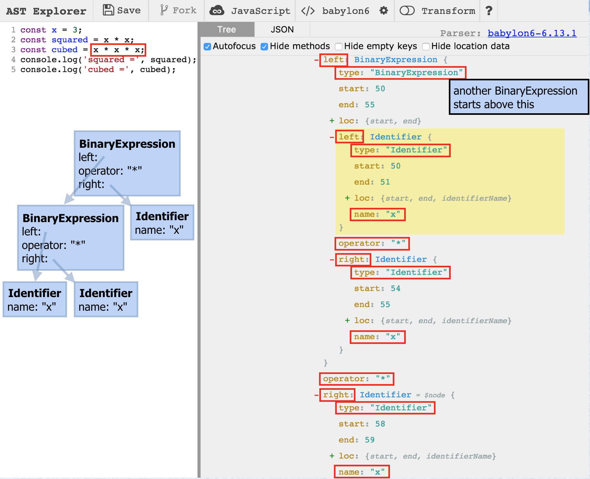

ESLint is, as the website describes, the "pluggable linting utility for JavaScript and JSX." Linters reports many syntax errors and potential run-time errors. ESLint also reports deviations from specified coding guidelines. Error messages identify the violated rules, making it easy to adjust their configuration if you disagree with the defaults.
Languages that require compilers have a way to give feedback to developers before code is executed. Since JavaScript doesn't require a compiler, linters are needed to play that role.
Alternatives to ESLint exist, such as JSLint and JSHint, but none compare in terms of the number of rules supported, ability to configure the rules, and ability to add custom rules.
While you can write JavaScript code without using a linter, that's a bit like playing football without a helmet or taking food out of an oven without mitts. Somebody is going to get hurt.
Some say that making all the changes
suggested by ESLint takes too much time.
Fortunately, ESLint supports a "fix" mode that
automates making many of the changes.
There are several ways to accomplish this.
Running eslint --fix file-path
from a terminal/command-line modifies a file in-place.
Editor/IDE plugins allow this to be done with a single keyboard shortcut.
Version control systems like Git can run this on checkout and checkin of files.
Often developer teams cannot agree on the rules to be enforced. One solution is for each developer to have their own ESLint configuration file and run ESLint in fix mode on files as they are checked out. The team can have an official project ESLint configuration files and run ESLint in fix mode on files as they are checked in. Everybody wins!
To install ESLint globally:
npm install -g eslint
npm is installed automatically when Node.js is installed. For details on npm, see https://docs.npmjs.com/.
To install ESLint locally within a project:
npm install --save-dev eslint
No rules are enforced by default. Desired rules must be configured. A list of built-in rules and documentation on them can be found at http://eslint.org/docs/rules/.
There are several ways to configure ESLint including:
.eslintrc.json.eslintrc.js
.eslintrc.yaml
package.json
using the eslintConfig property
Use of a file named simply .eslintrc
containing JSON or YAML is deprecated.
ESLint searches upward from current directory for these files. It combines settings in all of the configuration files found with settings in the closest files taking precedence. A configuration file in the home directory is only used if no other configuration files are found.
Rule configuration files can specify values for these properties:
| Name | Description |
|---|---|
env |
This is a list of environments in which your code can run.
Each environment adds globals (described next).
A list of supported environments can be found at
http://eslint.org/docs/user-guide/configuring.
Common values include browser, es6, node, jasmine, jest, and mocha.
|
globals |
This is a list of acceptable global variables and whether they can be modified (modification isn't typically allowed). |
parser |
By default, ESLint uses the
Espree parser
to parse the code it checks.
This property can specify a different parser.
If using newer JS features,
Flow
type annotations, or
JSX,
run "npm install -g babel-eslint" and
change this property to "babel-eslint".
Another compatible parser is
Esprima.
Work is underway to create an ESLint-compatible TypeScript parser.
See https://github.com/eslint/typescript-eslint-parser.
|
parserOptions |
This specifies the ECMA version, source type ("module" or "script"; see next section), and extra features (such as JSX). |
plugins |
This specifies a set of plugins to use. Plugins supplement the rules and environments provided by ESLint. |
rules |
This specifies the rules to be enforced (or not) and their configuration. It will almost certainly be the largest part of the configuration. |
extends |
This is a string or array of strings
that refer to other configuration files.
The values are either relative file references
or names of installed npm packages that contain an ESLint configuration file.
Popular examples include
"airbnb", "google", and "standard".
The npm package names for these have the prefix "eslint-config-".
Rule settings in the current file override settings for
the same rules in configurations being extended.
All the built-in rules that are recommended by the ESLint team
can be enabled by extending "eslint:recommended".
These rules have a check mark in front of them on the
rules page.
|
Each JavaScript file in an application is treated either as a script or a module. The differences are described in the following table:
| Scripts | Modules | |
|---|---|---|
| Default Mode | non-strict | strict |
| Top-level Variables | global | local to module |
Top-level value of this |
window |
undefined |
Can use import statements |
no | yes |
Typically, most .js files should be treated as modules.
ESLint plugins provide additional rules and environments. A list of availble plugins can be found at https://github.com/dustinspecker/awesome-eslint#plugins.
Popular ESLint plugins include:
To create an initial configuration file, run eslint --init.
This asks a series of yes/no and multiple choice questions about your preferences.
Alternatively, it can inspect a set of files you specify to infer your preferences.
After this configuration file is created, it can be customized.
Here is an example session using rules from an existing style guide:
eslint-plugin-volkmann$ eslint --init ? How would you like to configure ESLint? Use a popular style guide ? Which style guide do you want to follow? Google ? What format do you want your config file to be in? JSON Successfully created .eslintrc.json file in /Users/Mark/Documents/programming/languages/javascript/eslint/eslint-plugin-volkmann
Here is an example session based on answers to questions:
eslint-plugin-volkmann$ eslint --init ? How would you like to configure ESLint? Answer questions about your style ? Are you using ECMAScript 6 features? Yes ? Are you using ES6 modules? Yes ? Where will your code run? Browser ? Do you use CommonJS? No ? Do you use JSX? Yes ? Do you use React Yes ? What style of indentation do you use? Spaces ? What quotes do you use for strings? Single ? What line endings do you use? Unix ? Do you require semicolons? Yes ? What format do you want your config file to be in? JSON Successfully created .eslintrc.json file in /Users/Mark/Documents/programming/languages/javascript/eslint/eslint-plugin-volkmann
Here's an example of a JSON-based configuration file
that would typically be in a file named .eslintrc.json.
{
"env": {
"browser": true,
"es6": true,
"jest": true,
"node": true
},
"globals": {
"$": false
},
"parser": "babel-eslint",
"parserOptions": {
"ecmaVersion": 7,
"sourceType": "module",
"ecmaFeatures": {
"jsx": true
}
},
"plugins": [
"html",
"react"
],
"rules": {
"brace-style": ["error", "1tbs"], // stands for "one true brace style"
... many more rules go here ...
}
}
The syntax for specifying rules is:
"name": setting
or"name": [setting, config]setting is one of"off" or 0"warn" or 1"error" or 2config is rule-specific.
For a comprehensive set of configured rules, consider my configuration file at https://github.com/mvolkmann/MyUnixEnv/blob/master/.eslintrc.json. Feel free to use this file as a starting point for your customizations.
To lint a specific file:
eslint file-path.
To lint all JavaScript files in and below the current directory:
eslint **/*.js.
To lint all files in and below the current directory:
eslint **.
Typically, it is desirable to only run ESLint on .js files.
To run ESLint using an npm script, add the following
in the scripts section
of package.json:
"eslint": "eslint **/*.js"This can be run by entering
npm run eslint.
To lint JavaScript in HTML files:
npm install -g eslint-plugin-html.eslintrc.json
as in the "JSON Configuration" example above on line 23.
To ignore certain files,
list the directories and files to ignore
in the file .eslintignore
in the project root directory.
For more details on configuring ESLint, see http://eslint.org/docs/user-guide/configuring.
To specify a configuration file to use
rather than automatically search for one:
eslint -c config-file-path files-to-check
To run on files with an extension other than .js:
eslint --ext extension files-to-check
A common example is the jsx extension.
To fix all fixable errors:
eslint --fix files-to-check-and-fix
This fixes many, but not all, rule violations in source files.
To skip fixes for a certain rule:
eslint --fix --rule 'some-rule: off' some-file.js
To skip fixes for multiple rules, specify the --rule option
multiple times.
To cache checked files so they are only rechecked if they change:
eslint --cache
This creates the file .eslintcache.
Add --debug to verify that caching is working.
Look for output lines containing "Linting".
For information on more command-line options, enter:
eslint --help
The ESLint output format can be specified with the command-line option
-f {formatter-name}.
There is no option for specifying this in an ESLint configuration file.
There are many formatting options to choose from.
Some formatters produce output suitable for feeding into other tools.
For details, see
http://eslint.org/docs/user-guide/formatters/.
Recommended formatters include stylish (the default)
and codeframe.
Here is an example of stylish output that describes errors for a custom rule that we'll build later in this article:
/Users/Mark/Documents/programming/languages/javascript/eslint/eslint-plugin-volkmann/bad-code.js 2:17 error prefer x**2 over multiplication volkmann/exponentiation-operator 3:15 error prefer x**3 over multiplication volkmann/exponentiation-operator 7:18 error prefer x**2 volkmann/exponentiation-operator 8:16 error prefer x**3 volkmann/exponentiation-operator 12:17 error prefer (x * 2)**(3 + 4) volkmann/exponentiation-operator ✖ 5 problems (5 errors, 0 warnings)
Here is an example of the same errors using the codeframe formatter:
error: prefer x**2 over multiplication (volkmann/exponentiation-operator) at bad-code.js:2:17:
1 | const x = 3;
> 2 | const squared = x * x;
| ^
3 | const cubed = x * x * x;
4 | console.log('squared =', squared);
5 | console.log('cubed =', cubed);
error: prefer x**3 over multiplication (volkmann/exponentiation-operator) at bad-code.js:3:15:
1 | const x = 3;
2 | const squared = x * x;
> 3 | const cubed = x * x * x;
| ^
4 | console.log('squared =', squared);
5 | console.log('cubed =', cubed);
6 |
error: prefer x**2 (volkmann/exponentiation-operator) at bad-code.js:7:18:
5 | console.log('cubed =', cubed);
6 |
> 7 | const squared2 = Math.pow(x, 2);
| ^
8 | const cubed2 = Math.pow(x, 3);
9 | console.log('squared2 =', squared2);
10 | console.log('cubed2 =', cubed2);
error: prefer x**3 (volkmann/exponentiation-operator) at bad-code.js:8:16:
6 |
7 | const squared2 = Math.pow(x, 2);
> 8 | const cubed2 = Math.pow(x, 3);
| ^
9 | console.log('squared2 =', squared2);
10 | console.log('cubed2 =', cubed2);
11 |
error: prefer (x * 2)**(3 + 4) (volkmann/exponentiation-operator) at bad-code.js:12:17:
10 | console.log('cubed2 =', cubed2);
11 |
> 12 | const complex = Math.pow(x * 2, 3 + 4);
| ^
13 | console.log('complex =', complex);
14 |
5 errors found.
Many integrations are supported. These are summarized at http://eslint.org/docs/user-guide/integrations.
For Vim,
install the Syntastic plugin at
https://github.com/scrooloose/syntastic
and add the following line to .vimrc:
let g:syntastic_javascript_checkers=['eslint']
For Emacs, use the Flycheck syntax checking extension at http://codewinds.com/blog/2015-04-02-emacs-flycheck-eslint-jsx.html.
For Atom, see https://atom.io/packages/linter-eslint or https://atom.io/packages/eslint.
For Code, see https://marketplace.visualstudio.com/items?itemName=dbaeumer.vscode-eslint.
For WebStorm/IDEA, see https://plugins.jetbrains.com/plugin/7494.
To disable all rules in the current scope until re-enabled:
/* eslint-disable */ code-lines /* eslint-enable */
To disable specific rules in the current scope until re-enabled:
/* eslint-disable rule1, rule2, ... */ code-lines /* eslint-enable rule1, rule2, ... */
To disable all rules for a single line:
code-line // eslint-disable-lineor
// eslint-disable-next-line code-line
To disable specific rules for a single line:
code-line // eslint-disable-line rule1, rule2, ...or
// eslint-disable-next-line rule1, rule2, ... code-line
In addition to listing global variables in an ESLint configuration file, these can be specified in source files that use them.
To allow use of read-only global variables in the current scope:
/* global name1, name2 */
To allow use of modifiable global variables in the current scope:
/* global name1: true, name2: true */
The default is false meaning read-only.
Include these comments at top of a file for file scope.
New versions of ESLint and its plugins often add support for new rules. These must be specified in an ESLint configuration file to take advantage of them. The npm package eslint-find-rules finds supported rules in ESLint and plugins that are not specified in the current ESLint configuration file.
This must run from npm. Follow these steps:
cd to the root directory of the project.npm install --save-dev eslint eslint-find-rules eslint-plugin-*eslint-plugin-* represents
each of the optional plugins being used.
"efr": "eslint-find-rules --unused ~/.eslintrc.json --no-error"~/.eslintrc.json or one that is project-specific.
npm run efrAdding custom rules to ESLint is easier than you probably imagine. To demonstrate this, we'll build a plugin that contains one rule. The rule looks for code that could use the ES2016 exponentiation operator. The following table shows examples of code that it would flag and the fix it would apply.
| Offending Code | Fixed Code |
|---|---|
x * x |
x**2 |
x * x * x |
x**3 |
x * x * x * y * y |
x**3 * y**2 |
Math.pow(x, 2) |
x**2 |
Math.pow(x * y, a + b) |
(x * y)**(a + b) |
The steps to implement, test, package, deploy, install, and use custom rules are:
const x = 3;
const squared = x * x;
const cubed = x * x * x;
console.log('squared =', squared);
console.log('cubed =', cubed);
const squared2 = Math.pow(x, 2);
const cubed2 = Math.pow(x, 3);
console.log('squared2 =', squared2);
console.log('cubed2 =', cubed2);
const complex = Math.pow(x * 2, 3 + 4);
console.log('complex =', complex);
eslint-plugin-name".
npm publish.
Each time this is done, the version in
package.json must be bumped.
This command requires an npm account that can be created by running these commands:
npm set init.author.name "Your Name" npm set init.author.email "your-email-address" npm set init.author.url "your-blog-or-home-page-url" npm adduser
npm install -g eslint-plugin-name for global use or
without the -g option to install in a specific project.
Custom rules can be tested and used without packaging, deploying, and installing. The steps to do this are described later.
The recommended file structure for a plugin is:
package.json index.js lib/rules my-rule.js tests/lib/rules my-rule.js
This file uses require to pull in
all the rule definition files in the plugin
and provides a default configuration for them. An example follows:
module.exports = {
rules: {
/* eslint-disable global-require */
'exponentiation-operator': require('./lib/rules/exponentiation-operator')
},
configs: {
all: {
parserOptions: {
ecmaVersion: 7
},
rules: {
'volkmann/exponentiation-operator': 'error'
}
}
}
};
This is a free, web-based tool for viewing the abstract syntax tree of a snippet of JavaScript code. To use it, browse https://astexplorer.net/, enter code in the left pane, and see the corresponding AST in the right pane. Select code in the left pane to cause the corresponding part of the AST to be highlighted in the right pane.

The content of the file lib/rules/exponentiation-operator.js
is provided below.
The create method returns an object with methods
that will be invoked using the
visitor pattern.
When AST nodes are encountered, the corresponding method,
if one is defined, is invoked.
In this case the two methods are
BinaryExpression and CallExpression.
When a nested BinaryExpression is found,
this code processes all its descendants.
Later this method will be called again for nested expressions
that have already been processed, so we need to skip those.
ESLint doesn't allow modifying AST nodes,
so we can't just add a "processed" flag on them.
This is why we use the array processedStarts.
/**
* This looks for expressions like "x * x * x"
* and replaces them with "x**3".
* The example above is parsed as a BinaryExpression times x.
* The BinaryExpression is parsed as x * x.
* So x * x * x would be parsed as (x * x) * x.
* This also replaces expressions like "Math.pow(x, 3)"
* with "x**3".
* @fileoverview Prefer exponentiation operator over multiplication and Math.pow.
* @author R. Mark Volkmann
*/
module.exports = {
meta: {
docs: {
description: 'prefer ** over multiplication',
category: 'Stylistic Issues',
recommended: true
},
fixable: 'code',
schema: [ // This is a JSON schema format description of a rule’s options.
// Include this option for "x ** 2". Exclude for "x**2".
{enum: ['spaceAround']}
]
},
create(context) {
const processedStarts = [];
return {
BinaryExpression(node) {
// This code only cares about multiplication operators.
if (node.operator !== '*') return;
let exponent = 2; // We know it is at least this.
// BinaryExpressions have left and right operands.
let {left, right} = node;
// This rule only handles BinaryExpressions where
// the right operand is an identifier.
if (right.type !== 'Identifier') return;
// Avoid processing nested BinaryExpressions multiple times.
if (processedStarts.includes(right.start)) return;
const {name} = right;
// Increase exponent for each additional * BinaryExpression
// that uses the same operand name.
while (left.type === 'BinaryExpression') {
// If we find an operator other than *, this rule cannot be applied.
if (left.operator !== '*') return;
// Switch to the nested operands.
right = left.right;
left = left.left;
// All the identifier names must match.
if (right.name !== name) return;
// Keep track of BinaryExpressions that have already been processed.
processedStarts.push(right.start);
exponent++;
}
// This rule only handles cases where the most deeply nested
// BinaryExpression has a left operator that is an Identifier.
if (left.type === 'Identifier' && left.name === name) {
// Process spaceAround option.
const space = context.options.includes('spaceAround') ? ' ' : '';
// Report the rule violation.
const text = left.name + space + '**' + space + exponent;
context.report({
node,
message: 'prefer ' + text + ' over multiplication',
// If running in --fix mode, apply this fix.
fix(fixer) {
// Warning: When the spaceAround option is not used,
// the fix for the built-in space-infix-ops rule
// will add spaces back around **.
// Only one fixer method can be called
// and its result must be returned.
return fixer.replaceText(node, text);
}
});
}
}, // end of BinaryExpression method
CallExpression(node) {
const {callee} = node;
if (callee.object.name !== 'Math') return;
if (callee.property.name !== 'pow') return;
function getCode(arg) {
const sourceCode = context.getSourceCode();
const needParens = arg.type === 'BinaryExpression';
const code = sourceCode.getText(arg);
return needParens ? '(' + code + ')' : code;
}
const [base, exponent] = node.arguments;
const baseCode = getCode(base);
const exponentCode = getCode(exponent);
const text = baseCode + '**' + exponentCode;
context.report({
node,
message: 'prefer ' + text,
fix(fixer) {
return fixer.replaceText(node, text);
}
});
}
};
}
};
In addition to flagging rule violations,
ESLint rules can fix the offending code.
To do this, the rule must include a fix method
in the object passed to context.report
(as seen at line 77 of the example rule code above).
This method is passed a fixer which is a RuleFixer object
defined in
eslint/lib/util/rule-fixer.js.
Methods on the fixer object are described at
http://eslint.org/docs/developer-guide/working-with-rules#applying-fixes.
In the fixer method descriptions below, a "token" refers to a piece of text that is actually in the code, whereas a "node" refers to an abstract representation of what the code means (credit goes to Teddy Katz for this explanation). A range is an array containing start and end indexes. AST nodes have a range property with this kind of value.
| Fixer Method | Description |
|---|---|
insertTextAfter(nodeOrToken, text) |
inserts text after the given node or token |
insertTextAfterRange(range, text) |
inserts text after the given range |
insertTextBefore(nodeOrToken, text) |
inserts text before the given node or token |
insertTextBeforeRange(range, text) |
inserts text before the given range |
remove(nodeOrToken) |
removes the given node or token |
removeRange(range) |
removes text in the given range |
replaceText(nodeOrToken, text) |
replaces the text in the given node or token |
replaceTextRange(range, text) |
replaces the text in the given range |
For more detail on implementing custom rules than is presented here, see http://eslint.org/docs/developer-guide/working-with-rules.
Tests for rules are placed in the tests/lib/rules directory
in files with the same names as the files that implement the rules.
ESLint uses Mocha for testing rules. The steps to configure this are:
npm install --save-dev mocha"test": "mocha tests/lib/rules"
Here's the test file for our rule,
in tests/lib/rules/exponentiation-operator.js.
/**
* @fileoverview Tests for exponentiation operator
* @author R. Mark Volkmann
*/
const RuleTester = require('eslint').RuleTester;
const ruleName = 'exponentiation-operator';
const rule = require('../../../lib/rules/' + ruleName);
const ruleTester = new RuleTester();
ruleTester.run(ruleName, rule, {
valid: [
{code: 'x**2', parserOptions: {ecmaVersion: 7}},
{code: 'x**3', parserOptions: {ecmaVersion: 7}}
],
invalid: [
{
code: 'x * x',
errors: [
{
message: 'prefer x**2 over multiplication',
type: 'BinaryExpression'
}
],
output: 'x**2'
},
{
code: 'x * x * x',
options: ['spaceAround'],
errors: [
{
message: 'prefer x ** 3 over multiplication',
type: 'BinaryExpression'
}
],
output: 'x ** 3'
},
{
code: 'x * x * x * x',
errors: [
{
message: 'prefer x**4 over multiplication',
type: 'BinaryExpression'
}
],
output: 'x**4'
},
{
code: 'x * x * y',
errors: [
{
message: 'prefer x**2 over multiplication',
type: 'BinaryExpression'
}
],
output: 'x**2 * y'
},
{
code: 'Math.pow(x, 2)',
errors: [
{
message: 'prefer x**2',
type: 'CallExpression'
}
],
output: 'x**2'
},
{
code: 'Math.pow(x * y, a + b)',
errors: [
{
message: 'prefer (x * y)**(a + b)',
type: 'CallExpression'
}
],
output: '(x * y)**(a + b)'
},
] // end of invalid
});
To run the tests:
npm test
Custom rules don't need to be deployed to npm and installed in order to use them. This is useful for rules that are project-specific, rules that aren't intended to be deployed to npm, or for testing rules that haven't been deployed yet.
The steps to achieve this are:
eslint with the --rulesdir option
set to the directory from step 1.
For example, to use our "exponentiation-operator" rule
from the directory containing the lib directory
which contains rules/exponentiation-operator.js,
we could add the following line to .eslintrc.json:
"exponentiation-operator": ["error", "spaceAround"]Then we can run ESLint with
eslint --rulesdir lib/rules some-filename.js
To run the tests, enter npm test or just npm t.
Here's the output from our test.
> mocha tests/lib/rules
exponentiation-operator
valid
✓ x**2 (47ms)
✓ x**3
invalid
✓ x * x
✓ x * x * x
✓ x * x * x * x
✓ x * x * y
✓ Math.pow(x, 2)
✓ Math.pow(x * y, a + b)
8 passing (75ms)
Files under node_modules are not checked.
This is good because it's likely that JavaScript files
found there will violate many of the rules you have configured.
Files in other locations can be ignored by listing either the files or
the directories that contain them in the .eslintignore file.
The command line options --ignore-path and
--ignore-pattern can also be used to exclude files.
Warning messages listing the ignored files will be output.
Include the --quiet option to suppress these.
I hope this article has provided you with everything you need to know to use ESLint. You should also feel ready to begin implementing your own ESLint rules. Please feel free to send questions and feedback to mark at ociweb.com.
Thank you very much to Charles Sharp for reviewing this article! He makes everything I write better. Also, thanks to Kent C. Dodds for making me aware of AST Explorer.